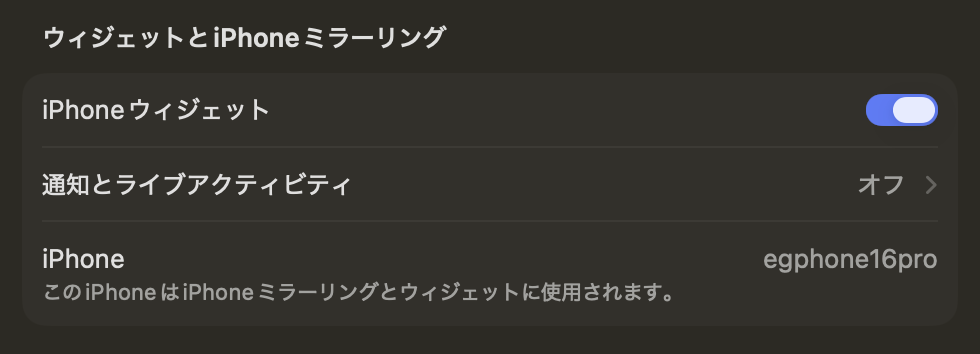
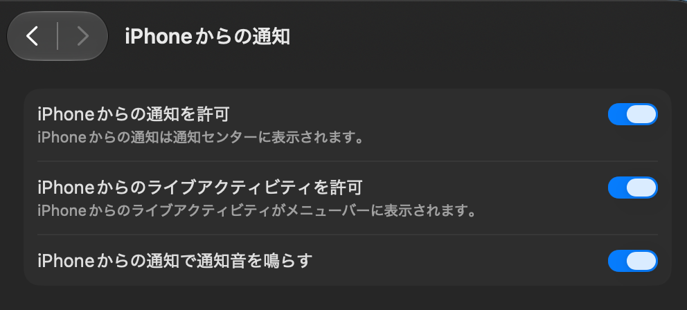

どんなアプリ？
アンテナの本数だけでは、通信の応答がどれくらい速いかは分かりません。egtency は、移動中などに変わる応答時間を数値と色で確認するためのアプリです。
egtency は、選んだ宛先へ ping（ICMP Echo）を送り、返信までの往復時間を基にした値をミリ秒（ms）で表示する試作アプリです。ロック画面の Live Activity と、対応機種の Dynamic Island では値を緑・黄・赤に色分けし、応答がない状態も区別します。画面ロック中やほかのアプリの使用中にも計測を続けられるか、実機で検証しています。
表示するのは選んだ宛先までの応答です。アンテナの本数や通信速度、インターネット全体の接続可否を判定するものではありません。ping が遮断されている回線や宛先でも応答なしになるため、圏外とは限りません。
主な機能
1.1.1.1または8.8.8.8を選んで応答時間を計測。IPv4 が使えず IPv6 が使える経路では、同じ提供元の IPv6 宛先へ切り替える設計です。- 約3秒周期を目標に計測。直近の応答を平滑化し、数値の変動を見やすく表示。
- Live Activity の値を緑・黄・赤に色分け。無応答やエラー、古い表示は灰色に。
- 計測ログを CSV として共有し、後から通信の変化を確認。
- 開始から最大5時間で終了する設計。iOS による中断時には、可能な場合に通知で案内。
基本的な使い方
- 計測先を
1.1.1.1または8.8.8.8から1件選びます。初回は未選択です。選択は保存され、計測中と開始・終了処理中は変更できません。 - iOS 設定で Live Activity を有効にし、「開始」を押します。通知許可の確認が出たら回答してください。通知を許可しなくても計測できます。
- アプリ画面、ロック画面、対応機種の Dynamic Island で応答時間を確認します。
- 終えるときは「停止」を押します。「計測ログを共有」から過去の CSV も選べます。完了したログは停止処理が終わってから共有してください。ログを削除する場合は、停止処理完了後に「全消去」を選び、確認します。
画面で見る
開発中に撮影した実機のスクリーンショットです。現行版とは表示や操作項目が異なる場合があります。画像を選ぶと大きく表示できます。


ロック画面の緑色の表示が egtency の Live Activity です。その上の灰色の表示は iOS の計測タスク表示です。
応答時間による色の変化
ロック画面では Live Activity の背景と文字が変わります。Dynamic Island に収納すると、黒い背景の上で数値の文字色が変わります。以下は iPhone 16 Pro で撮影した表示例です。同じ色の2枚は別々の時点の値で、同時刻の測定結果ではありません。
計測の周期と画面の更新周期は別です。現行版は約3秒周期の計測を目標としていますが、Live Activity の画面更新は iOS が管理します。旧ビルドの試験では、画面収録中の Dynamic Island 最小表示が約15秒ごとに変化しました。この15秒は描画遅延の上限ではなく、現行3秒版や通常のコンパクト表示、ロック画面の周期を示す値でもありません。現行版の各画面の更新周期は検証中です。
緑 0〜100 ms
応答が速い

黄 101〜200 ms
応答がやや遅い

赤 201 ms 以上
応答が遅い

色は平滑化した表示値を基にした、選択先への応答時間の目安です。ロック画面では「応答なし」「エラー」「更新なし」、Dynamic Island のコンパクト・最小表示では灰色の「--」で数値を表示できない状態を示します。最小表示では単位 ms を省きます。短い変化がすべて画面に現れるとは限らないため、詳細は平滑化前の値を残した CSV でも確認できます。
iOS の計測タスク表示を整理する
egtency で計測を開始してホーム画面やほかのアプリへ移ると、iOS のバックグラウンドタスク表示がホーム画面やロック画面に出ることがあります。次の図は iPhone 16 Pro の試験で確認した収納・消去の操作です。iOS の計測タスク表示と、色付きの egtency 独自 Live Activity は別の表示です。図中の指と矢印は操作を示すために合成したものです。
ホーム画面：上にスワイプ
画面上部にバックグラウンドタスクの大きな表示が出たら、表示を上にスワイプします。Dynamic Island に収納されます。

Dynamic Island：左にスワイプ
Dynamic Island の右側に残るバックグラウンドタスクのアイコンも、左にスワイプすると表示を閉じられます。

ロック画面：左にスワイプして消去
ロック画面の灰色のバックグラウンドタスク表示を左にスワイプすると「消去」が現れます。「消去」を選ぶと表示を閉じられます。

旧ビルドの実機試験では、iOS の計測タスク表示を閉じても計測は続きました。 一方、色付きの egtency 独自 Live Activity を手動で消したときは、検知して計測も止める設計です。システム表示の中止操作は計測終了につながるため、表示を収納・消去する操作と区別してください。iOS の動作は端末や状況によって変わる可能性があります。
Mac のライブアクティビティ表示が不要な場合
iPhone ミラーリングなどの連係機能により、iPhone で開始した egtency の Live Activity が Mac のメニューバーにも表示される場合があります。計測は iPhone 側で行われます。専用の macOS 版アプリは未実装です。
Mac への表示が不要な場合は、Mac の「システム設定」で次のどちらかを選んでください。
通知もライブアクティビティもオフにする
「ウィジェットとiPhoneミラーリング」の「通知とライブアクティビティ」を開き、両方の受信をオフにします。この項目は通知設定への入口で、両方をオフにすると画像のように「オフ」と表示されます。

ライブアクティビティだけオフにする
「通知」→「iPhoneからの通知」を開き、「iPhoneからのライブアクティビティを許可」だけをオフにします。通知を受け取りたい場合は「iPhoneからの通知を許可」をオンのままにします。画像は変更前のオン状態です。

この設定は egtency 専用ではなく、その Mac が受け取る iPhone 由来の通知・ライブアクティビティ全体に適用されます。iPhone 側の egtency の Live Activity 設定は変更しません。iPhone 側で無効にすると、現行の egtency は計測を開始できません。
利用者提供の2026年9月29〜30日の設定画像です。macOS のバージョンによって名称・配置が異なり、「iPhoneからの通知を許可」と表示される場合もあります。iPhone ミラーリングの設定状況によって項目が表示されない場合があります。Mac でのライブアクティビティ受信は macOS Tahoe 26 以降の機能です。Apple の設定案内
Mac の受信設定変更と、表示中の1件を閉じる操作は別です。Mac で1件を閉じた場合の計測への影響と、受信設定変更後の egtency の継続動作は実機未検証です。
開発状況と注意点
現在は開発中の実証アプリで、一般公開・配布はしていません。 現行プロジェクトは iOS 26 以降の iPhone 向けです。記録上の実機確認は iPhone 16 Pro / iOS 27.0 で行っています。iOS 26 の実機とほかの機種は未検証です。
約1秒周期の旧ビルドでは、バックグラウンドで5時間の計測と自動終了に成功した例があります。一方、別の試験では途中で計測が終了しました。約3秒周期・平滑化表示の版には基本動作の報告がありますが、これは2026年9月30日のソース最適化前のものです。最適化後は通信・CSVの自動テストとアプリ・Widgetのビルドを確認し、新しい実機試験は未実施です。長時間の継続、画面更新周期、IPv6 専用回線での動作は引き続き未検証です。常に5時間計測を続けられる保証はありません。
表示値が変わらないだけでは、計測が止まったとは限りません。アプリを開いて状態を確認し、計測が終了している場合は「開始」で再開してください。アプリスイッチャーで egtency を終了すると、バックグラウンド計測も中止されます。
計測では選択先へ ICMP パケットを送ります。CSV は iPhone 内に保存し、アプリ独自のサーバーへ計測履歴を送信する機能はありません。共有は利用者の操作で行います。
計測中は少量の通信と電池を使用します。モバイル回線ではデータ容量と電池残量にご注意ください。
説明の更新日：2026年10月7日。今回の更新は記述の照合と macOS の設定案内です。掲載画像は開発中の試作版に基づきます。